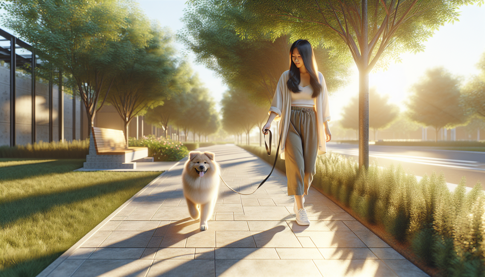

Leash pulling is one of the most common dog training struggles, especially for new puppy parents, rescue adopters, and anyone living with an enthusiastic dog. If your walks feel more like a tug-of-war than a relaxing outing, you are not alone. The good news is that leash pulling is a trainable behavior, and with the right approach, your dog can learn to walk calmly by your side.
Many owners assume their dog is being stubborn, dominant, or intentionally ignoring them. In reality, most dogs pull because it works. Pulling gets them closer to smells, people, dogs, squirrels, and everything else they want to explore. From your dog’s point of view, the behavior has been rewarded over and over again.
To stop your dog from pulling on the leash, you need to teach a new skill: walking on a loose leash. This takes consistency, patience, and reinforcement of the behavior you do want. In this guide, you will learn why dogs pull, what equipment helps, and exactly how to train loose-leash walking in a way that is effective, humane, and backed by learning science.
Before you can fix leash pulling, it helps to understand what is driving it. Dogs naturally move faster than humans, and they explore the world with their noses. Walks are full of exciting sights, sounds, and scents, so many dogs surge forward simply because they are eager and overstimulated.
There are a few common reasons dogs pull:
They have learned that pulling works. If pulling gets them where they want to go, the behavior is reinforced.
They are excited or undertrained. Puppies and newly adopted dogs often have not yet learned leash manners.
They are stressed or anxious. Some dogs pull to create distance from something scary, while others rush toward triggers out of frustration.
They have excess energy. A dog with pent-up energy may struggle to focus on walking calmly.
The important takeaway is this: leash pulling is usually not a sign that your dog is trying to challenge you. It is a normal behavior shaped by environment, emotion, and reinforcement history. That means it can be changed with kind, consistent training.
Equipment will not train your dog for you, but it can make the process safer and easier. Your goal is to use gear that gives you control without causing pain or fear.
For most dogs, the best options are:
A well-fitted front-clip harness. This can reduce pulling power and help redirect your dog back toward you.
A standard 4- to 6-foot leash. Avoid retractable leashes during training, as they often encourage constant tension.
High-value treats. Soft, easy-to-eat rewards like chicken, cheese, or training treats help reinforce good walking behavior.
Tools to avoid include equipment designed to suppress behavior through discomfort, such as prong collars or choke chains, especially without guidance from a qualified professional. These tools may stop pulling in the moment, but they do not teach your dog what to do instead, and they can increase stress, fear, or reactivity in some dogs.
Think of your harness and leash as management tools. The real training happens through repetition and reward.
One of the biggest mistakes owners make is trying to teach leash skills in the most distracting environment possible: the sidewalk, the park, or a busy neighborhood. For many dogs, that is like trying to teach math in the middle of a concert.
Start indoors or in a quiet yard where your dog can succeed. Put the leash on, grab your treats, and begin with very short sessions.
Here is a simple foundation exercise:
Stand still with your dog beside you.
The moment the leash is loose, mark the behavior with a cheerful word like “yes” or a clicker.
Give your dog a treat near your leg.
Take one or two steps forward.
If your dog stays close and the leash remains loose, mark and reward again.
If your dog moves ahead and tightens the leash, stop walking.
This teaches a powerful lesson: loose leash makes the walk continue, while tension makes the walk pause. Over time, your dog begins to understand that staying near you is what earns movement and rewards.
Keep sessions short, upbeat, and frequent. Five minutes of focused practice is often more effective than one long, frustrating walk.
Dogs repeat behaviors that pay off. If the environment is more rewarding than you, your dog will naturally pull toward it. Your job is not to compete with the entire world forever, but to make checking in with you and walking politely highly reinforcing during the learning phase.
Reward your dog for the behaviors you want to see more often, such as:
Walking beside you with a loose leash
Looking up at you voluntarily
Returning to your side after getting distracted
Slowing down when you slow down
Place treats where you want your dog to be. If you want your dog near your left or right leg, deliver rewards in that position. This helps create a clear picture of the walking zone.
You can also use real-life rewards. If your dog wants to sniff a bush, approach another dog, or move toward a tree, ask for a moment of loose leash first. Then allow the sniff or forward movement as the reward. This is especially effective because it uses what your dog already wants.
In training terms, you are reinforcing incompatible behavior. A dog cannot pull hard and walk on a loose leash at the same time.
Even with a great training plan, your dog will still pull sometimes. What matters is how you respond. If you keep walking while the leash is tight, you accidentally reward the pulling.
Instead, try one of these science-based responses:
Be a tree. Stop moving the moment the leash tightens. Wait for your dog to release tension, look back, or step toward you. Then continue.
Change direction. Calmly turn and walk the other way, encouraging your dog to follow. Reward when they catch up on a loose leash.
Reset with distance. If your dog is too aroused by a trigger, move farther away until they can think and respond again.
Avoid jerking the leash, scolding, or dragging your dog backward. These reactions often increase frustration and do little to teach the correct behavior. Calm, consistent consequences work better: pulling makes progress stop; loose leash makes good things happen.
If your dog is young, newly adopted, or highly excitable, lower your expectations. In the early stages, success may mean just a few loose-leash steps at a time.
If your dog is not improving, the issue is often not stubbornness but inconsistency or asking for too much too soon. Loose-leash walking is a real skill, and it takes practice in gradually harder environments.
Here are common mistakes to watch for:
Training only on real walks. Skills need to be built in easy settings before being tested outside.
Not rewarding enough. Early training should include frequent reinforcement for even small wins.
Walking too far, too fast. Long walks can overwhelm a dog that is still learning.
Being inconsistent. If pulling works sometimes, your dog will keep trying it.
Ignoring your dog’s emotional state. Fear, frustration, and overexcitement can make learning much harder.
Remember that rescue dogs may need time to decompress before they can focus well outdoors. Puppies may need shorter sessions and more management. Adolescent dogs often seem to forget their training temporarily as their brains and bodies change. This is normal.
Some leash pulling is straightforward training. Other cases involve bigger behavior challenges, such as leash reactivity, fear, or extreme arousal around people, dogs, bicycles, or traffic. If your dog lunges, barks, panics, or seems impossible to redirect, it is worth working with a qualified positive reinforcement trainer or veterinary behavior professional.
You should also seek support if:
Your dog is strong enough to pull you off balance
Walks feel unsafe or highly stressful
Your dog has a history of trauma or fear
You are not seeing progress after several weeks of consistent practice
Getting help early can prevent habits from becoming more entrenched and make walks more enjoyable for both of you.
If you want to stop your dog from pulling on the leash, focus less on correcting the pulling and more on teaching the skill of walking on a loose leash. Start in low-distraction environments, reward generously, and make sure pulling never gets your dog where they want to go. With repetition, your dog will learn that staying connected to you is the fastest path to all the good stuff a walk has to offer.
Progress may not be perfectly linear, especially with puppies, adolescent dogs, or rescues adjusting to a new home. That is okay. Consistency matters more than perfection. Every calm step, every check-in, and every moment of slack in the leash is part of building a better habit.
Walk training is not just about manners. It is about communication, trust, and helping your dog succeed in the human world. Stay patient, celebrate small wins, and keep sessions positive. Better walks are absolutely possible.
Get our full Dog Training eBook series — new titles added weekly.